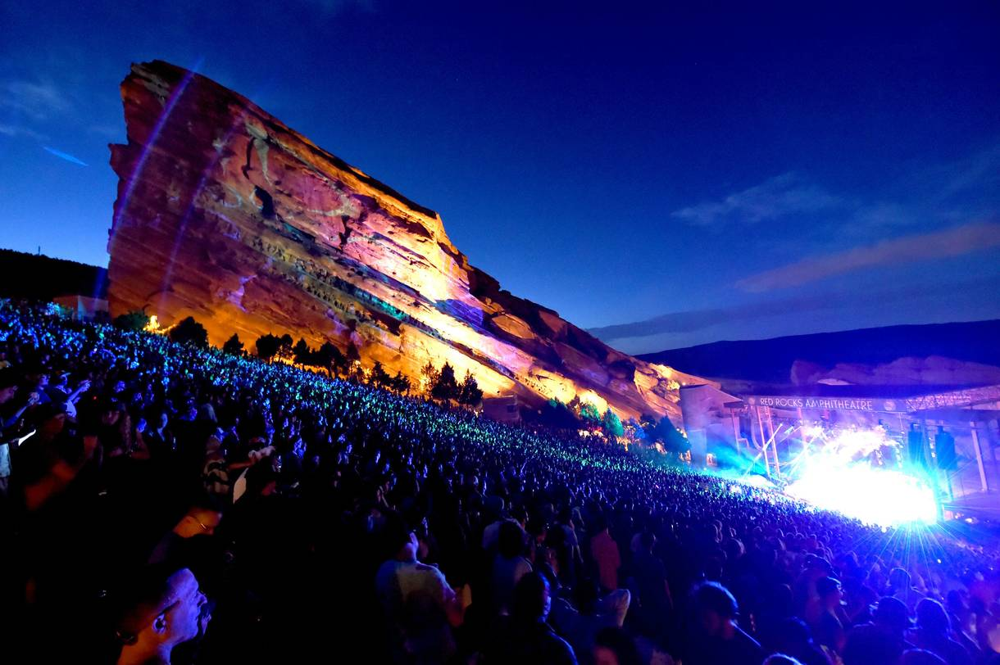
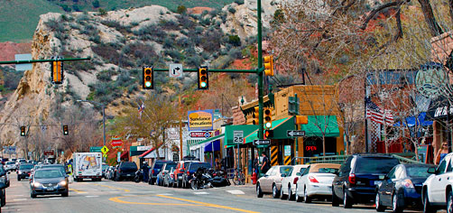

Red Rocks Amphitheatre
Located near Morrison, Colorado, the Red Rocks Amphitheatre is an open-air amphitheatre and concert venue. It is a naturally formed rock structure located 15 miles west of Denver. The amphitheatre seats over 9500 people and consists of two 300 foot monoliths for a great acoustic performance. This venue was chosen because of the location and the mood it would give the audience. The amphitheatre is an outdoor venue and surrounded by nature. When you look over the stage, you are able to see downtown Denver. The incorporation of the nature, the view, and lighting would create the dream-like environment envisioned for this concert.
For more on Red Rocks Amphitheatre, click on the picture.

Morrison, Colorado
Morrison, Colorado is a small, historic town located southwest of Denver with about 430 residents. Named after George Morrison, a builder and businessman, Morrison is a town filled with historic landmarks and activities to do, especially involving nature.
For more on Morrison, Colorado, click on the picture.